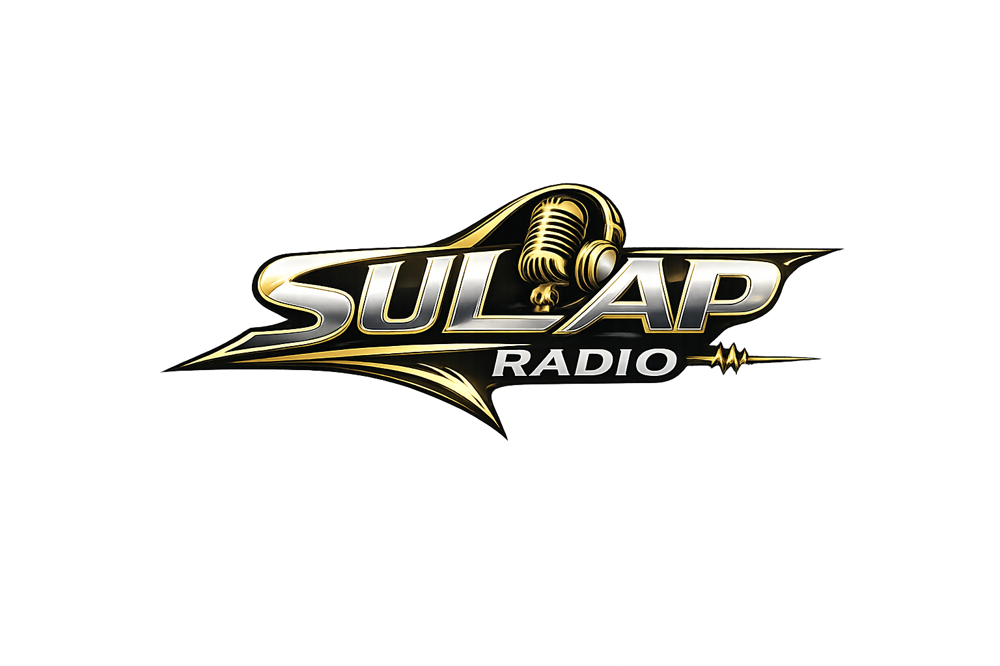

SULAP RADIO PLAYLIST SCHEDULE
Current Playing: ROCK MUSIC
- 6cyclemind - Biglaan
- 6cyclemind - Kasalanan
- 1017 - Berting
- A Perfect Circle - Thirteenth Step - Weak and Powerless
- Abscond - Agay
- Acid Bath - When the Kite String Pops - Cassie Eats Cockroaches
- Aggressive Audio - First Timer
- Aggressive Audio - Liar Evil
- Aggressive Audio - Lingin
- Alice in Chains - Dirt - Rooster
- All-American Rejects - Swing, Swing
- Amber Pacific - Gone So Young (Official Music
- Amber Pacific - Rock One, Volume 24 - Gone So Young
- As i Lay Dying - Rock Sound: 100% Volume, #155 - Paralyzed
- Audioslave - Audioslave - Like a Stone
- August Burns Red - Guardians - Paramount
- Avenged Sevenfold - Promo Only: Modern Rock Radio, December 2011 - Buried Alive
- Bad Wolves - NRJ Summer Hits Only 2018 - Zombie
- Blink 182 - I Miss You
- Blink 182 - What's My Age Again
- Bon Jovi - Always
- Bon Jovi - Cross Road - I'll Be There For You
- Bon Jovi - Cross Road - Someday I'll Be Saturday Night
- Bon Jovi - I'll Be There For You (Officia
- Bon Jovi - Living On A Prayer
- Bon Jovi - Never Say Goodbye
- Bon Jovi - Santa Fe
- Bon Jovi - Someday I'll Be Saturday Night
- Bon Jovi - This Ain't A Love Song
- Bon Jovi - Wanted Dead Or Alive
- Bon Jovi - You Give Love A Bad Name
- Boston - Amanda
- Boys Like Girls - Boys Like Girls - Thunder
- Breaking Benjamin - Phobia - The Diary of Jane
- Brian Michael Broome - In Vain - In Vain
- Bryan Adams - Back To You
- Bryan Adams - Cuts Like A Knife
- Bryan Adams - Please Forgive Me
- Bryan Adams - Summer Of 69
- Bullet for My Valentine - Fever - Your Betrayal
- Bullet for My Valentine - Tears Don't Fall - Tears Don't Fall (album edit)
- Candiria - 300 Percent Density - The Obvious Destination
- Cannibal Corpse - Torture - Scourge of Iron
- Chicosci - Chicosci - A Promise
- Chicosci - Chicosci - Chicosci Vampire Social Club
- Chicosci - Chicosci - January Days
- Chicosci - Chicosci - Knives
- Chicosci - Chicosci - Last Look
- Chicosci - Chicosci - Manila Teenage Death Squad
- Chicosci - Chicosci - Matinee
- Chicosci - Chicosci - Pink Hearts, Yellow Stars (Harlequin Lover)
- Chicosci - Chicosci - Seven Black Roses
- Chicosci - Chicosci - Sweet Maria
- Chicosci - Chicosci - The Devil Made Me Do It
- Chicosci - Chicosci - You're Killing Me
- Click Five - Jenny
- Coal Chamber - Coal Chamber - Big Truck
- Coal Chamber - Coal Chamber - Bradley
- Coal Chamber - Coal Chamber - Dreamtime
- Coal Chamber - Coal Chamber - First
- Coal Chamber - Coal Chamber - I
- Coal Chamber - Coal Chamber - Loco
- Coal Chamber - Coal Chamber - Sway
- Coal Chamber - Dark Days - Fiend
- Coldplay - Yellow
- Collective Soul - Run
- Collective Soul - Shine
- Cradle Of Filth - Nymphetamine - Nymphetamine Fix
- Cradle Of Filth - Nymphetamine Fix [Official Vid
- Creed - Higher
- Creed - Promo Only: Mainstream Radio, November 2001 - My Sacrifice
- Creed - Weathered - One Last Breath
- Creed - What If - What If (album version)
- Crown Magnetar - Barbed Wire Noose
- Daylight - Jar - Youngest Daughter
- Death By Stereo - Problema
- Deep Blue Something - Breakfast At Tiffany's
- Def Leppard - Two Steps Behind
- Def Leppard - When Love And Hate Collide
- Deftones - Adrenaline - Bored
- Deftones - Adrenaline - Engine No. 9
- Deftones - Adrenaline - Root
- Deftones - Around the Fur - My Own Summer (Shove It)
- Deftones - Be Quiet and Drive (Far Away) - Be Quiet and Drive (Far Away) (radio edit)
- Deftones - Diamond Eyes - 976âEVIL
- Deftones - Diamond Eyes - Risk
- Deftones - Diamond Eyes - This Place Is Death
- Deftones - milk of the madonna - milk of the madonna
- Deftones - my mind is a mountain - my mind is a mountain
- Deftones - Ohms - Genesis
- Deftones - private music - departing the body
- Deftones - White Pony - Change (In the House of Flies)
- Delta Empire - 59 Creed - Bullets - Drum Cover
- Demon Hunter - Death, a Destination - One Thousand Apologies
- Demon Hunter - The World Is a Thorn - LifeWar
- Dethklok - Dethalbum IV - Horse of Fire
- Disturbed - Disturbed - Down With the Sickness
- Disturbed - Disturbed - Prayer
- Disturbed - Disturbed - Stricken
- Disturbed - Ten Thousand Fists - Pain Redefined
- Disturbed - The Sickness - Stupify
- Disturbed - The Sickness - Violence Fetish
- Dong Abay - Perpekto
- Dope - Felons and Revolutionaries - Debonaire
- downset. - Check Your People - Fallen Off
- DRAIN - ...IS YOUR FRIEND - Stealing Happiness From Tomorrow
- Drowning Pool - Hellelujah - By the Blood
- Drowning Pool - The Edge - Bodies
- Druidess, Vera, Beiss, Lennox, Ulrich Wild, Ulrich Wild, Jonny Relik, Valenstine, Valenstine - All You Are - Make Me Feel
- Druidess, Vera, Beiss, Lennox, Vera, Ulrich Wild, Ulrich Wild, Jonny Relik, Valenstine, Valenstine - All You Are - To Love & To Lose
- Dying Fetus - Make Them Beg for Death - Throw Them in the Van
- Empty Skyline - Beneath My Skin - Empty Skyline
- Enchi - Budlot Mata
- Enchi - Dungagi Ni
- Enchi - Istambay
- Eraserheads - Alapaap
- Eraserheads - Anthology - Fruitcake
- Eraserheads - Anthology - Harana
- Eraserheads - Anthology - Huwag Kang Matakot
- Eraserheads - Anthology - Julie Tearjerky
- Eraserheads - Anthology - Kamasupra
- Eraserheads - Anthology - Maselang Bahaghari
- Eraserheads - Anthology - Overdrive
- Eraserheads - Anthology 2 - Spoliarium
- Eraserheads - Anthology 2 - Tikman
- Eraserheads - Carbon Stereoxide - Maskara
- Eraserheads - Circus - Alapaap
- Eraserheads - Circus - Alkohol
- Eraserheads - Circus - Bato
- Eraserheads - Circus - Butterscotch
- Eraserheads - Circus - Hey Jay
- Eraserheads - Circus - Insomnya
- Eraserheads - Circus - Kailan
- Eraserheads - Circus - Magasin
- Eraserheads - Circus - Minsan
- Eraserheads - Circus - Sa Wakas
- Eraserheads - Circus - Sembreak
- Eraserheads - Circus - Wating
- Eraserheads - Circus - Wishing Wells
- Eraserheads - Circus - With a Smile
- Eraserheads - Cutterpillow - Ang Huling El Bimbo
- Eraserheads - Cutterpillow - Back2Me
- Eraserheads - Cutterpillow - Cutterpillow
- Eraserheads - Cutterpillow - Fill Her
- Eraserheads - Cutterpillow - Fine Time
- Eraserheads - Cutterpillow - Paru-Parong Ningning
- Eraserheads - Cutterpillow - Poorman's Grave
- Eraserheads - Cutterpillow - Slo Mo
- Eraserheads - Cutterpillow - Superproxy
- Eraserheads - Cutterpillow - Torpedo
- Eraserheads - Cutterpillow - Waiting for the Bus
- Eraserheads - Cutterpillow - Walang Nagbago
- Eraserheads - Eraserheads: The Reunion Concert! - Kailan (Live)
- Eraserheads - Fruitcake
- Eraserheads - Fruitcake - Christmas Ball
- Eraserheads - Fruitcake - Christmas Morning
- Eraserheads - Fruitcake - Christmas Party
- Eraserheads - Fruitcake - Flat Tire
- Eraserheads - Fruitcake - Fruit Fairy
- Eraserheads - Fruitcake - Gatekeeper
- Eraserheads - Fruitcake - Hitchin' a Ride
- Eraserheads - Fruitcake - Lightyears
- Eraserheads - Fruitcake - Lord of the Rhum
- Eraserheads - Fruitcake - Mono Virus
- Eraserheads - Fruitcake - Old Fashioned Christmas Carol
- Eraserheads - Fruitcake - Rise and Shine
- Eraserheads - Fruitcake - Santa Ain't Comin' No Mo'
- Eraserheads - Fruitcake - Shadow
- Eraserheads - Fruitcake - Styrosnow
- Eraserheads - Fruitcake - Trip to Jerusalem
- Eraserheads - Hard To Believe
- Eraserheads - Huwag Mo Nang Itanong
- Eraserheads - Kailan
- Eraserheads - Kaliwete
- Eraserheads - Ligaya
- Eraserheads - Maselang Bahaghari
- Eraserheads - Minsan
- Eraserheads - Natin99 - Dahan Dahan
- Eraserheads - Natin99 - Kahit Ano
- Eraserheads - Natin99 - Kilala
- Eraserheads - Natin99 - May Sumasayaw
- Eraserheads - Natin99 - Peace It Together
- Eraserheads - Natin99 - Pop Machine
- Eraserheads - Natin99 - Salamin
- Eraserheads - Natin99 - Sino Sa Atin
- Eraserheads - Natin99 - Sinturong Pangkaligtasan
- Eraserheads - Natin99 - Southsuperhighway
- Eraserheads - Natin99 - Tama Ka
- Eraserheads - Sticker Happy - Andalusian Dog
- Eraserheads - Sticker Happy - Futuristic
- Eraserheads - Sticker Happy - Ha Ha Ha
- Eraserheads - Sticker Happy - Hard to Believe
- Eraserheads - Sticker Happy - Kaliwete
- Eraserheads - Sticker Happy - Kananete
- Eraserheads - Sticker Happy - Para Sa Masa
- Eraserheads - Sticker Happy - Spoliarium
- Eraserheads - Sticker Happy - Sticker Happy
- Eraserheads - Sticker Happy - Tapsilogue
- Eraserheads - Tindahan Ni Aling Nena
- Eraserheads - Torpedo
- Eraserheads - Toyang
- Eraserheads - UltraElectroMagneticPop! - Combo on the Run
- Eraserheads - UltraElectroMagneticPop! - Easy Ka Lang
- Eraserheads - UltraElectroMagneticPop! - Shake Yer Head
- Eraserheads - UltraElectroMagneticPop! - Tindahan Ni Aling Nena
- Eraserheads - Ultraelectromagneticpop!: The 25th Anniversary Remastered Edition - Ligaya
- Eraserheads - Ultraelectromagneticpop!: The 25th Anniversary Remastered Edition - Pare Ko
- Eraserheads - Ultraelectromagneticpop!: The 25th Anniversary Remastered Edition - Toyang
- Eraserheads - With a Smile
- Fall Out Boy - Sugar We're Going Down
- Fall Out Boy - Thanks For The Memories
- Falling in Reverse & Marilyn Manson - God Is a Weapon - God Is a Weapon
- Fire House - Here For You
- Firehouse - All She Wrote
- Firehouse - Don't Treat Me Bad (Official V
- Firehouse - FireHouse - Don't Treat Me Bad
- Firehouse - FireHouse 3 - Here for You
- Firehouse - Here For You (Official Video)
- Firehouse - Hold Your Fire - When I Look Into Your Eyes
- Firehouse - I Live My Life For You
- Firehouse - Love Of A Lifetime (Good Acous
- Firehouse - You Are My Religion
- Five For Fighting - 100 Years
- Flybanger - Headtrip to Nowhere - Radical
- Gin Blossoms - As Long As It Matters
- Gin Blossoms - Follow You Down
- Gin Blossoms - Til I Hear It From You
- Godsmack - Classic Rock #202: Voodoo Lounge - 1000hp
- Godsmack - Godsmack - Moon Baby
- Godsmack - Godsmack - Voodoo
- Gojira - From Mars to Sirius - From Mars
- Goo Goo Dolls - Iris
- Gorillaz - Clint Eastwood
- Green Day - Good Riddance (Time Of Your Li
- Greyhound - Pigface
- Greyhoundz - 7 Corners of Your Game - Fools
- Greyhoundz - 7 Corners of Your Game - Groovin' With Ya
- Greyhoundz - 7 Corners of Your Game - Hinahanap
- Greyhoundz - 7 Corners of Your Game - Leech
- Greyhoundz - 7 Corners of Your Game - Mr. P.I.G.
- Greyhoundz - 7 Corners of Your Game - Ode
- Greyhoundz - 7 Corners of Your Game - Party at 802
- Greyhoundz - 7 Corners of Your Game - Pigface
- Greyhoundz - 7 Corners of Your Game - Sin
- Greyhoundz - 7 Corners of Your Game - Stage
- Greyhoundz - 7 Corners of Your Game - Taking U High
- Greyhoundz - 7 Corners of Your Game - Temptation
- Greyhoundz - 7 Corners of Your Game - Y?
- Greyhoundz - Apoy - 1s 3s 6s
- Greyhoundz - Apoy - Apoy
- Greyhoundz - Apoy - Beautiful Ungrateful
- Greyhoundz - Apoy - Doble Kara
- Greyhoundz - Apoy - In Debted To
- Greyhoundz - Apoy - Kill the Joy
- Greyhoundz - Apoy - Koro
- Greyhoundz - Apoy - Medicine
- Greyhoundz - Apoy - Pseudo Dramatic
- Greyhoundz - Apoy - Silhouettes
- Greyhoundz - Apoy - Sitcoms
- Greyhoundz - Apoy - Snapshots Taken From...
- Greyhoundz - Apoy - Soldier
- Greyhoundz - O.D.E.
- Greyhoundz - Taking you High
- Grin Department - Miss U
- Grin Department - Picture Mo Inday
- Grin Department - Simbang Gabi
- Head - Save Me From Myself - Washed by Blood
- Headplate - Bullsized - Just in Mind
- Highly Suspect - The Boy Who Died Wolf - My Name Is Human
- Hinder - Extreme Behavior - Lips of an Angel
- Hostile Groove - Dead Rising Original Soundtrack - Fly Routine
- In This Moment - Whore - Whore
- Incubus - Bravo Hits: PartyâRock - Drive
- Incubus - Drive
- Incubus - Monuments and Melodies - Wish You Were Here
- Incubus - Morning View - Are You In?
- Jinjer - Micro - Perennial
- Jon Bon Jovi - Blaze Of Glory
- Juan Paasa - Summoning Eru
- Kamikazee - Chicksilog
- Kamikazee - Chiksilog
- Kamikazee - Narda
- Karnivool - Asymmetry - Aeons
- Karnivool - In Verses - Animation
- Karnivool - In Verses - Remote Self Control
- Kid Rock - American Badass
- Kid Rock - Only God Knows Why
- Kilkus - The Pattern Of Self Design - The Prospect Of Being Alone
- Killswitch Engage - Legends of Metal - The End of Heartache
- Kittie - Spit - Charlotte
- Kittie - Spit - Immortal
- Korn - [untitled] - Bitch We Got a Problem
- Korn - [untitled] - I Will Protect You
- Korn - [untitled] - Overture or Obituary
- Korn - Follow the Leader - All in the Family
- Korn - Follow the Leader - B.B.K.
- Korn - Follow the Leader - Children of the Korn
- Korn - Follow the Leader - Dead Bodies Everywhere
- Korn - Follow the Leader - Freak on a Leash
- Korn - Follow the Leader - Got the Life
- Korn - Follow the Leader - It's On!
- Korn - Follow the Leader - Justin
- Korn - Follow the Leader - Reclaim My Place
- Korn - Follow the Leader - Seed
- Korn - Got The Life
- Korn - Insane - Insane
- Korn - Issues - Beg for Me
- Korn - Issues - Falling Away From Me
- Korn - Issues - Make Me Bad
- Korn - Issues - Somebody Someone
- Korn - Issues - Trash
- Korn - Korn - Blind
- Korn - Korn - Faget
- Korn - Korn III: Remember Who You Are - Let the Guilt Go
- Korn - Korn III: Remember Who You Are - Never Around
- Korn - Korn III: Remember Who You Are - Oildale (Leave Me Alone)
- Korn - Korn III: Remember Who You Are - Pop a Pill
- Korn - Life Is Peachy - A.D.I.D.A.S.
- Korn - Life Is Peachy - Good God
- Korn - Life Is Peachy - K@#ø%!
- Korn - Life Is Peachy - No Place to Hide
- Korn - Metal on Metal - Love & Meth
- Korn - MTV Unplugged - Coming Undone
- Korn - Never Never - Never Never
- Korn - Requiem Mass - Forgotten
- Korn - Requiem Mass - Hopeless and Beaten
- Korn - Requiem Mass - Penance to Sorrow
- Korn - Requiem Mass - Start the Healing
- Korn - See You on the Other Side - For No One
- Korn - See You on the Other Side - Souvenir
- Korn - See You on the Other Side - Tearjerker
- Korn - See You on the Other Side - Throw Me Away
- Korn - Take a Look in the Mirror - Did My Time
- Korn - Take a Look in the Mirror - Right Now
- Korn - Take a Look in the Mirror - Y'all Want a Single
- Korn - The Essential Korn - A.D.I.D.A.S.
- Korn - The Essential Korn - Proud
- Korn - The Essential Korn - Right Now
- Korn - The Nothing - Can You Hear Me
- Korn - The Nothing - Cold
- Korn - The Nothing - The End Begins
- Korn - The Nothing - The Seduction of Indulgence
- Korn - The Nothing - You'll Never Find Me
- Korn - The Other Side, Part 1 - Twisted Transistor
- Korn - The Path of Totality - Get Up!
- Korn - The Path of Totality - Narcissistic Cannibal
- Korn - The Serenity of Suffering - Black Is the Soul
- Korn - The Serenity of Suffering - Insane
- Korn - The Serenity of Suffering - Next in Line
- Korn - The Serenity of Suffering - Rotting in Vain
- Korn - Untouchables - Alone I Break
- Korn - Untouchables - Here to Stay
- Korn - Untouchables - Thoughtless
- Korn - World Famous KROQ 106.7 FM: 1996 New Rock Music CD - Shoots and Ladders
- Korn feat. Corey Taylor - A Different World - A Different World
- Korn feat. Skrillex - The Path of Totality - Get Up!
- KoЯn - Greatest Hits, Vol. 1 - Another Brick in the Wall, Pt. 1, 2, 3
- KoЯn - Greatest Hits, Vol. 1 - Clown
- KoЯn - Greatest Hits, Vol. 1 - Word Up!
- Kublai Khan - Nomad - Belligerent
- Lamb of God - Ashes of the Wake - Laid to Rest
- Lamb of God - Ashes of the Wake - Omerta
- Lamb of God - Resolution - King Me
- Lamb of God - Sacrament (15th Anniversary Edition) - Requiem
- Lamb of God - Sacrament - Walk With Me in Hell
- Lamb of God - VII: Sturm und Drang - Embers
- LARCÉNIA ROÉ - Extraction - Lullaby (Special)
- Leo - Bulls On Parade (Leo Version) - Bulls On Parade (Leo Version)
- Lifehouse - Hanging By A Moment
- Limp Bizkit - 40 jaar pinkpop - My Generation (album version)
- Limp Bizkit - Chocolate Starfish and the Hot Dog Flavored Water - Take a Look Around
- Limp Bizkit - Faith
- Limp Bizkit - Icon - Faith
- Limp Bizkit - Significant Other - Break Stuff
- Limp Bizkit - Significant Other - Nookie
- Limp Bizkit - Significant Other - Trust?
- Limp Bizkit - Sunfly Gold, Volume 34: Linkin Park & Limp Bizkit - My Way
- LimpBizkit - Rollin'
- Linkin Park - Faint
- Linkin Park - From The Inside
- Linkin Park - Hybrid Theory - A Place for My Head
- Linkin Park - Hybrid Theory - Crawling
- Linkin Park - Hybrid Theory - In the End
- Linkin Park - Hybrid Theory - Papercut
- Linkin Park - Hybrid Theory - Points of Authority
- Linkin Park - Hybrid Theory - With You
- Linkin Park - Meteora - Don't Stay
- Linkin Park - Meteora - Figure.09
- Linkin Park - Meteora - Lying From You
- Linkin Park - Meteora - Numb
- Linkin Park - Meteora - Somewhere I Belong
- Linkin Park - Minutes to Midnight - Given Up
- Linkin Park - One Step Closer
- Linkin Park - Papercut
- Linkin Park - Promo Only: Modern Rock Radio, October 2000 - One Step Closer
- Live - All Over You
- Live - Selling The Drama
- Mantequilla - Bolinaw
- Mantequilla - Ibog-Ibog
- Mantequilla - L.Q
- Marco Aldenese - Yano - Abno
- Marco Aldenese - Yano - Banal Na Aso, Santong Kabayo
- Marco Aldenese - Yano - Cono Ka P're
- Marco Aldenese - Yano - Esem
- Marco Aldenese - Yano - Iskolar Ng Bayan
- Marco Aldenese - Yano - Kaka
- Marco Aldenese - Yano - Kaklase
- Marco Aldenese - Yano - Kumusta Na
- Marco Aldenese - Yano - Mc' Jo
- Marco Aldenese - Yano - Mercy
- Marco Aldenese - Yano - Paalam Sampaguita
- Marco Aldenese - Yano - Senti
- Marco Aldenese - Yano - Shobis
- Marco Aldenese - Yano - State U
- Marco Aldenese - Yano - Tara
- Marco Aldenese - Yano - Trapo
- Marco Aldenese - Yano - Tsinelas
- Marilyn Manson - 40 jaar pinkpop - The Beautiful People (album version)
- Marilyn Manson - Gamer: Original Motion Picture Soundtrack - Sweet Dreams (Are Made of This)
- Marilyn Manson - Heaven Upside Down - SAY10
- Matchbook Romance - Promise
- Matchbox Twenty - Bent
- Matchbox Twenty - If You're Gone
- Megadeth - Back to the Bus: Compiled by Funeral for a Friend - Holy Wars⦠The Punishment Due
- Meshuggah - Destroy Erase Improve - Vanished
- Meshuggah - Immutable: The Indelible Edition - The Abysmal Eye
- Metallica - 72 Seasons - Chasing Light
- Metallica - 72 Seasons - Lux Ãterna
- Metallica - 72 Seasons - Shadows Follow
- Metallica - Death Magnetic - All Nightmare Long
- Metallica - Death Magnetic - Broken, Beat & Scarred
- Metallica - Death Magnetic - Cyanide
- Metallica - Death Magnetic - My Apocalypse
- Metallica - Death Magnetic - That Was Just Your Life
- Metallica - Death Magnetic - The Day That Never Comes
- Metallica - Enter Sandman
- Metallica - Garage Inc. - Am I Evil?
- Metallica - Garage Inc. - Stone Cold Crazy
- Metallica - Garage Inc. - The Wait
- Metallica - Garage Inc. - Whiskey in the Jar
- Metallica - Hardwired⦠to SelfâDestruct - Confusion
- Metallica - Hardwired⦠to SelfâDestruct - Moth Into Flame
- Metallica - Hardwired⦠to SelfâDestruct - Spit Out the Bone
- Metallica - Kill 'Em All - Hit the Lights
- Metallica - Kill 'Em All - Jump in the Fire
- Metallica - Kill 'Em All - Metal Militia
- Metallica - Kill 'Em All - Motorbreath
- Metallica - Kill 'Em All - No Remorse
- Metallica - Kill 'Em All - Seek & Destroy
- Metallica - Kill 'Em All - The Four Horsemen
- Metallica - Kill 'Em All - Whiplash
- Metallica - Master of Puppets - Battery
- Metallica - Master of Puppets - Damage, Inc.
- Metallica - Master of Puppets - Disposable Heroes
- Metallica - Master of Puppets - Leper Messiah
- Metallica - Master of Puppets - Master of Puppets
- Metallica - Master of Puppets - Orion
- Metallica - Master of Puppets - The Thing That Should Not Be
- Metallica - Master of Puppets - Welcome Home (Sanitarium)
- Metallica - Metallica (Remastered Deluxe Box Set) - Through the Never (Remastered)
- Metallica - Metallica - Don't Tread on Me
- Metallica - Metallica - Enter Sandman
- Metallica - Metallica - My Friend of Misery
- Metallica - Metallica - Nothing Else Matters
- Metallica - Metallica - Of Wolf and Man
- Metallica - Metallica - Sad but True
- Metallica - Metallica - The God That Failed
- Metallica - Metallica - The Unforgiven
- Metallica - Metallica - Through the Never
- Metallica - Metallica - Wherever I May Roam
- Metallica - Nothing Else Matters
- Metallica - Reload - Attitude
- Metallica - Reload - Fuel
- Metallica - Reload - The Memory Remains
- Metallica - Ride the Lightning - Creeping Death
- Metallica - Ride the Lightning - Fade to Black
- Metallica - Ride the Lightning - Fight Fire With Fire
- Metallica - Ride the Lightning - For Whom the Bell Tolls
- Metallica - Ride the Lightning - Ride the Lightning
- Metallica - Ride the Lightning - The Call of Ktulu
- Metallica - Ride the Lightning - Trapped Under Ice
- Metallica - Sad But True
- Metallica - St. [b]Anger - Frantic
- Metallica - The Best of the Best - Nothing Else Matters
- Metallica - The Best of the Best - The Unforgiven
- Metallica - The Metallica Collection - No Leaf Clover
- Metallica - The Unforgiven (Official Music
- Metallica - â¦And Justice for All - Blackened
- Metallica - â¦And Justice for All - Dyers Eve
- Metallica - â¦And Justice for All - Dyers Eve (work in progress rough mix)
- Metallica - â¦And Justice for All - Eye of the Beholder
- Metallica - â¦And Justice for All - Harvester of Sorrow
- Metallica - â¦And Justice for All - One
- Metallica - â¦And Justice for All - The Frayed Ends of Sanity
- Metallica - â¦And Justice for All - The Shortest Straw
- Metallica - â¦And Justice for All - To Live Is to Die
- Metallica - â¦And Justice for All - â¦And Justice for All
- Mindforce - Excalibur - Won't Be Denied
- Missing Filemon (ARNEL) - Kung Ako Ka Palang
- Missing Filemon - Inday
- Missing Filemon - Kung Ako Ka Palang
- Missing Filemon - Ngano Ba
- Missing Filemon - Prinsipal
- MISSING FILEMON - Sine-Sine (LIVE on Wish 107.5
- Missing Filemon - Suroy 2x (In The Studio Live)
- Mudvayne - Dig - Dig
- Mudvayne - L.D. 50 - Death Blooms
- Mudvayne - Lost and Found - Happy?
- Mudvayne - The End of All Things to Come - Not Falling
- Muse - Absolution - Hysteria
- Mushroomhead - XIII - Sun Doesn't Rise
- My Chemical Romance - Cancer
- My Chemical Romance - Greatest Hits - Helena
- My Chemical Romance - I Don't Love You
- My Chemical Romance - Three Cheers for Sweet Revenge - I'm Not Okay (I Promise)
- Nickelback - Far Away [Official Video]
- Nirvana - Smells Like Teen Spirit
- Offspring - Pretty Fly For A White Guy
- One Minute Silence - Available In All Colours - And Some Ya Lose
- Pantera - Cowboys From Hell - Cowboys From Hell
- Pantera - Drag the Waters
- Pantera - Far Beyond Driven - 5 Minutes Alone
- Pantera - Far Beyond Driven - Becoming
- Pantera - Far Beyond Driven - I'm Broken
- Pantera - Reinventing the Steel - Revolution Is My Name
- Pantera - Vulgar Display of Power - This Love
- Pantera - Vulgar Display of Power - Walk
- Papa Roach - Between Angels And Insects
- Papa Roach - Prison Break - Take Me
- Parokya ni Edgar - Bente - Akala
- Parokya ni Edgar - Bente - Silvertoes
- Parokya ni Edgar - Bigotilyo - Alumni Homecoming
- Parokya ni Edgar - Bigotilyo - Choco Latte
- Parokya ni Edgar - Bigotilyo - One and Only
- Parokya Ni Edgar - Buloy
- Parokya ni Edgar - Buruguduystunstugudunstuy - Please Don't Touch My Birdie
- Parokya ni Edgar - Buruguduystunstugudunstuy - Sampip
- Parokya ni Edgar - Buruguduystunstugudunstuy - Sayang
- Parokya Ni Edgar - Cooking Ng Ina Mo
- Parokya Ni Edgar - Edgar Edgar Musikahan - Sorry Na
- Parokya Ni Edgar - Edgar Edgar Musikahan - This Guy's In Love With You, Pare
- Parokya ni Edgar - Gulong Itlog Gulong - Halaga
- Parokya ni Edgar - Gulong Itlog Gulong - Inuman Na (Live)
- Parokya ni Edgar - Gulong Itlog Gulong - Picha Pie
- Parokya ni Edgar - Gulong Itlog Gulong - Saan Man Patungo
- Parokya ni Edgar - Gulong Itlog Gulong - Wag Mo Na Sana
- Parokya ni Edgar - Halina Sa Parokya - Gitara
- Parokya ni Edgar - Halina Sa Parokya - Muli
- Parokya ni Edgar - Halina Sa Parokya - Papa Cologne
- Parokya ni Edgar - Halina Sa Parokya - Para Sayo
- Parokya ni Edgar - Halina Sa Parokya - Telepono
- Parokya ni Edgar - Halina Sa Parokya - The Ordertaker
- Parokya Ni Edgar - Harana
- Parokya Ni Edgar - Inuman Na
- Parokya ni Edgar - Inuman Sessions, Vol. 1 - Kaleidoscope World (Live)
- Parokya ni Edgar - Khangkhungkherrnitz - Buloy
- Parokya ni Edgar - Khangkhungkherrnitz - Maniwala Ka Sana
- Parokya ni Edgar - Khangkhungkherrnitz - Tatlong Araw
- Parokya Ni Edgar - Lutong Bahay (Cooking Ng Ina M
- Parokya Ni Edgar - Maniwala Ka Sana
- Parokya Ni Edgar - Mr. Suave
- Parokya Ni Edgar - Muli
- Parokya Ni Edgar - Nakaw Ang Wallet Ko
- Parokya Ni Edgar - Pangarap Lang Kita Ft. Happe S
- Parokya Ni Edgar - Sampip
- Parokya Ni Edgar - San Man Patungo
- Parokya ni Edgar - Solid - Boys Do Fall in Love
- Parokya Ni Edgar - Tatlong Araw
- Parokya Ni Edgar - Trip (Siopao Na Special)
- Parokya Ni Edgar - Wag Mo Na Sana
- Parokya ni Edgar feat. Francis M - Inuman Sessions, Vol. 1 - The Yes Yes Show (Live)
- Parokya ni Edgar feat. Francis Vincent Montaner - Middle-Aged Juvenile Novelty Pop Rockers - Pangarap Lang Kita
- Pearl Jam - Daughter
- Ph8 - Ph8 - Conflicting Files
- Philippine Violator - Sikat Na Si Pedro
- Phyllomedusa - Amphibians Performing Surgery III: Murrexic Behaviour - Twelve-Spurt Somaticoperigeusia Kinemusculapathsaporrhagilysis
- Phylum - Itoy Itoy (Lyrics)
- Pierce the Veil feat. Kellin Quinn - King for a Day - King for a Day
- ProâPain - Pro-Pain - My Time Will Come
- Puddle of Mudd - BuzzCuts - Blurry
- R.E.M. - Imitation Of Life
- Rage Against The Machine - Bulls On Parade
- Rage Against The Machine - Guerrilla Radio
- Rage Against The Machine - Guerrilla Radio - Guerrilla Radio
- Rage Against the Machine - Rage Against the Machine XX - Bombtrack
- Rage Against the Machine - Rage Against the Machine XX - Killing in the Name
- Rammstein - Made in Germany 1995â2011 - Ich will
- Red - End of Silence - Breathe Into Me
- Red - End of Silence - Let Go
- Red Hot Chili Peppers - The Zephyr Song
- Red Jumpsuit Apparatus - Face Down
- Red Jumpsuit Apparatus - Your Guardian Angel
- Rheggz Theory - Babay
- RIVERMAYA - 214
- Rivermaya - Awit Ng Kabataan
- Rivermaya - Elesi
- Rivermaya - Hinahanap-Hanap Kita
- Roadrunner United - The AllâStar Sessions - Army of the Sun
- Rob Zombie - Hellbilly Deluxe - Living Dead Girl
- Saliva - Rest In Pieces
- Secondhand Serenade - Stay Close, Don't Go
- Sepultura - Sepultura: The Complete Max Cavalera Collection 1987â1996 - Slave New World
- Serj Tankian - Harakiri - Harakiri
- Sevendust - Best Of (Chapter One 1997â2004) - Coward
- Sevendust - Home - Denial
- Sevendust - Home - Headtrip
- Shinedown - The Sound of Madness - What a Shame
- Siakol - Akala Ko'y Langit
- Siakol - Hiwaga - Hardin
- Siakol - Hiwaga - Hiwaga
- Siakol - Hiwaga - Huling Halakhak
- Siakol - Hiwaga - Ikaw Ba Yan?
- Siakol - Hiwaga - Iniwan Mo Akong Nag-Iisa
- Siakol - Hiwaga - Kung
- Siakol - Hiwaga - Malapit Na
- Siakol - Hiwaga - Manibela
- Siakol - Hiwaga - Matulog Ka Na
- Siakol - Hiwaga - Sa Isang Bote Ng Alak
- Siakol - Hiwaga - Umayos Ka
- Siakol - Hiwaga - Walang Hanggan, Katapusan, Dulo
- Siakol - Ikaw Lamang
- Siakol - Iniwan Mo Akong Nag-Iisa
- Siakol - Kabilang Mundo - Aanhin
- Siakol - Kabilang Mundo - Basted
- Siakol - Kabilang Mundo - Bidyoke
- Siakol - Kabilang Mundo - Gobyerno
- Siakol - Kabilang Mundo - Inihaw
- Siakol - Kabilang Mundo - Kung Walang Ikaw
- Siakol - Kabilang Mundo - Kwarto
- Siakol - Kabilang Mundo - Lakas Tama (Panibagong Tama)
- Siakol - Kabilang Mundo - Nilalang
- Siakol - Kabilang Mundo - Plastik
- Siakol - Kabilang Mundo - Teka Lang
- Siakol - Korni
- Siakol - Lagim
- Siakol - Maligayang Pasko
- Siakol - Matulog Ka Na
- Siakol - P.I. (Lyric Video)
- Siakol - Pantasya - Ikaw Lamang
- Siakol - Pantasya - Inday
- Siakol - Pantasya - Makabagong Panahon
- Siakol - Pantasya - Malaya Ba
- Siakol - Pantasya - May Pagbabago
- Siakol - Pantasya - Pantasya
- Siakol - Pantasya - Sisa
- Siakol - Pantasya - Sumama Ka Sa Akin
- Siakol - Rekta - Ayos Lang
- Siakol - Rekta - Balewala
- Siakol - Rekta - Galit
- Siakol - Rekta - Halika Na
- Siakol - Rekta - Ingay
- Siakol - Rekta - Isla Puting Bato
- Siakol - Rekta - Itigil Na Natin
- Siakol - Rekta - Kasama
- Siakol - Rekta - Meron Pa
- Siakol - Rekta - No Problem (Kapag Ikaw Ang Kasama)
- Siakol - Rekta - Rekta
- Siakol - Rekta - Tsismis
- Siakol - Siakol - A... N. P...
- Siakol - Siakol - Bato-bato Sa Langit
- Siakol - Siakol - Kasalukuyan
- Siakol - Siakol - Pagmamahal
- Siakol - Tayo na Sa Paraiso - Alaws Arep
- Siakol - Tayo na Sa Paraiso - Aso
- Siakol - Tayo na Sa Paraiso - Biyaheng Impiyerno
- Siakol - Tayo na Sa Paraiso - Kanto
- Siakol - Tayo na Sa Paraiso - Lagim
- Siakol - Tayo na Sa Paraiso - Peksman
- Siakol - Tayo na Sa Paraiso - Salot
- Siakol - The Best of Siakol Vol. 2 - Muli Bang Makikita
- Siakol - The Best of Siakol Vol. 2 - Sistemang Bulok
- Siakol - The Best Of Siakol, Vol. 1 - Bakit Ba
- Siakol - The Best Of Siakol, Vol. 1 - Gabay
- Siakol - The Best Of Siakol, Vol. 1 - Hindi Mo Ba Alam? (Acoustic)
- Siakol - The Best Of Siakol, Vol. 1 - Lakas Tama
- Siakol - The Best Of Siakol, Vol. 2 - Kabilang Mundo
- Siakol - Tropa - Asahan Mo
- Siakol - Tropa - Gawing Langit Ang Mundo
- Siakol - Tropa - Ituloy Mo Lang
- Siakol - Tropa - Konti Na Lang
- Siakol - Tropa - Mauna Na Sila
- Siakol - Tropa - P.I.
- Siakol - Tropa - Piso Mula Sa Puso
- Siakol - Tropa - Rakenrol!
- Siakol - Tropa - Sandale
- Siakol - Tropa - Sasagipin Kita
- Siakol - Tropa - Tropa
- Siakol - Tsismis
- Silent Theory - Delusions - Fragile Minds
- Silverchair - Frogstomp (20th anniversary deluxe edition) - Acid Rain
- Simple Plan - I'm Just a Kid
- Simple Plan - Promo Only: Modern Rock Radio, March 2003 - Addicted
- Skid Row - I Remember You
- Skidrow - 18 And Life
- Slapshock - Agent Orange
- Slapshock - Anino Mo
- Slapshock - Project 11-41 - Bleed
- Slapshock - Project 11-41 - Countdown
- Slapshock - Project 11-41 - Enemy
- Slapshock - Project 11-41 - Fuck U
- Slapshock - Project 11-41 - Get Down
- Slapshock - Project 11-41 - Mother's Eye
- Slapshock - Project 11-41 - Satellite Kid
- Slapshock - Project 11-41 - Sunday Shivers
- Slapshock - Project 11-41 - Swallow
- Slapshock - Project 11-41 - Wind Shield
- Slapshock - Queen Paranoia
- Slapshock - Recollection - Anino Mo
- Slapshock - Recollection - Numb
- Slapshock - Recollection - Queen Paranoia
- Slapshock - Recollection - Wake Up
- Slipknot - .5: The Gray Chapter - Custer
- Slipknot - .5: The Gray Chapter - Killpop
- Slipknot - .5: The Gray Chapter - The Devil in I
- Slipknot - 9.0: Live - Drum Solo
- Slipknot - All Hope Is Gone - Psychosocial
- Slipknot - Antennas to Hell - Before I Forget
- Slipknot - Antennas to Hell - People = Shit
- Slipknot - Antennas to Hell - Snuff
- Slipknot - Antennas to Hell - Sulfur
- Slipknot - Bone Church - Bone Church
- Slipknot - Iowa - Everything Ends
- Slipknot - Iowa - Gently (live in London 2002)
- Slipknot - Iowa - The Heretic Anthem
- Slipknot - Left Behind - Left Behind (album version with fade)
- Slipknot - Slipknot - (sic)
- Slipknot - Slipknot - Despise (demo)
- Slipknot - Slipknot - Eyeless
- Slipknot - Slipknot - Interloper (demo)
- Slipknot - Slipknot - Liberate
- Slipknot - Slipknot - Prosthetics
- Slipknot - Slipknot - Purity
- Slipknot - Slipknot - Spit It Out
- Slipknot - Slipknot - Surfacing
- Slipknot - Slipknot - Wait and Bleed
- Slipknot - Vol. 3 (The Subliminal Verses) - Danger â Keep Away
- Slipknot - Vol. 3 (The Subliminal Verses) - Duality
- Slipknot - Vol. 3 (The Subliminal Verses) - Pulse of the Maggots
- Slipknot - Vol. 3 (The Subliminal Verses) - Welcome
- Slipknot - Vol. 3: (The Subliminal Verses) - Disasterpiece (live)
- Slipknot - We Are Not Your Kind - Nero Forte
- Smooth Friction - Solid Ug Lawas
- Snot - Get Some - I Jus' Lie
- Snot - Get Some - Joy Ride
- Snot - Get Some - Snot
- Snot - Get Some - Stoopid
- Soulfly - Omen - Refuse/Resist
- Soulfly - Prophecy - Prophecy
- Soulfly - Rock Sound: Music With Attitude, Volume 78 - Frontlines
- Staind - So Far Away
- Staind - The Illusion of Progress - Believe
- StaticâX - Wisconsin Death Trip - Push It
- Stone Temple Pilots - Core - Dead & Bloated (demo)
- Strait Up feat. Max of Soulfly - Strait Up - Catch a Spirit
- Suede - Beautiful Ones: The Best of Suede 1992-2018 - Beautiful Ones
- SULAP RADIO - TOH - JINGLE01
- SULAP RADIO - TOH - JINGLE02
- Superheist - Identical Remote Controlled Reactions - The Karma Division
- Switched - Ghosts in the Machine (disc 2) - Last Chance
- System of a Down - Hypnotize - Hypnotize
- System of a Down - Hypnotize - Vicinity Of Obscenity
- System of a Down - Mezmerize - B.Y.O.B.
- System of a Down - Mezmerize - Cigaro
- System of a Down - Mezmerize - Violent Pornography
- System of a Down - Steal This Album! - IâEâAâIâAâIâO
- System of a Down - System of a Down - DDevil
- System of a Down - System of a Down - Peephole
- System of a Down - System of a Down - Spiders
- System of a Down - System of a Down - SuiteâPee
- System of a Down - System of a Down: 5 Album Bundle - Soldier Side
- System of a Down - Toxicity - Aerials
- System of a Down - Toxicity - ATWA
- System of a Down - Toxicity - Chop Suey!
- System of a Down - Toxicity - Deer Dance
- System of a Down - Toxicity - Forest
- System of a Down - Toxicity - Needles
- System of a Down - Toxicity - Prison Song
- System of a Down - Toxicity - Psycho
- System of a Down - Toxicity - Toxicity
- System of a Down - Toxicity - X
- Teeth - Laklak
- Teeth - Prinsesa
- The Crystal Method - Legion of Boom - Starting Over
- The Devil Wears Prada - Zombie EP - Outnumbered
- The Overseer - We Search, We Dig - Secrets
- The Red Jumpsuit Apparatus - Don't You Fake It - Face Down
- THE USED - Buried Myself Alive
- The Verve Pipe - 90 Sweet 90s Hits! - The Freshmen
- The Youth - Basura
- TheOverseerVEVO - The Overseer - Amend
- Third Eye Blind - How's It Going To Be
- Thirty Seconds to Mars - A Beautiful Lie - The Kill (Bury Me)
- Thousand Foot Krutch - Phenomenon - Break the Silence
- Thousand Foot Krutch - Phenomenon - Faith, Love and Happiness
- Thousand Foot Krutch - Phenomenon - Phenomenon
- Thousand Foot Krutch - Promo Only: Modern Rock Radio, March 2008 - Falls Apart
- Thousand Foot Krutch - The Art of Breaking - Stranger
- Thousand Foot Krutch - The Flame in All of Us - The Flame in All of Us
- Thousand Foot Krutch - The Flame in All of Us - The Safest Place
- Thousand Foot Krutch - Welcome to the Masquerade - Scream
- Thousand Foot Krutch - Welcome to the Masquerade - The Part That Hurts the Most (Is Me)
- Three Days Grace - Three Days Grace - I Hate Everything About You
- Thumb - Exposure - Break Me
- Tool - 10,000 Days - The Pot
- Tool - Fear Inoculum - Invincible
- Torena - Evil Eyez - Bleed
- Typecast - The Boston Drama
- Typecast - Will You Ever Learn
- Ugly Kid Joe - Cats In The Cradle
- Ugly Kid Joe - Everything About You
- Urbandub - Soul Searching
- Verve Pipe - The Freshmen (Official Video)
- Waking Ashland - Hands On Deck
- War of Ages - Return to Life - Silent Night
- Warlock - Padre Damaso
- Watcha - Mutant - Clean
- WOLFGANG - Halik Ni Hudas
- Yano - Banal na Aso, Santong Kabayo
- Yano - Esem
- Yano - Esem (Lyrics)
- Yano - Paalam Sampaguita
- Yano - Tsinelas
- Yellow Card - Only One
- Youth - Mukha Ng Pera
- Youth - Multong Bakla